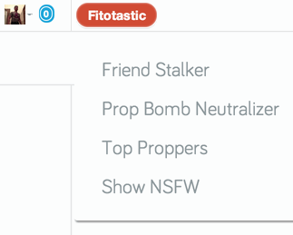
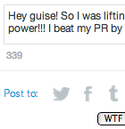

Interactive Enhancements
- Keep up with your Fito friends achievements, quests and workouts.
- Neutralize prop bombs: clear prop notifications without losing other notifications
- A list of your top 20 proppers
- Toggle NSFW items in the current view regardless of your settings
Char-o-meter: Character counts for text boxes
 Ever poured your heart out in Place to Vent or gushed about your latest triumph in WTF only to discover that your magnum opus has been truncated forever? No more! Char-o-meter will let you know when you're running out of characters.
Conversationalist: username auto-completion

Wouldn't it be nice to be able to quickly and easily direct a reply to one of the other commenters in a thread? Now you can with conversationalist!
- Just type "@" and begin to type the username.
- Use your up and down arrows to highlight the name you want.
- Press the Enter or Return key to complete the name.
- If you prefer, you can also click/tap the username to complete.
Friend Stalker
Do you have a lot of friends on Fitocracy. Do you try to prop and cheer them all, but you find that you can't keep up? Wouldn't it be nice to have one place where you could see what your friends are doing, prop their workouts, badges and quests, and write them notes on their feed or activities? Now, you can!
Prop
Prop your friends' activities by clicking the activity icon or by clicking the 'Prop All' button.
Friends' Info
Hover a friend's profile picture to read their bio, see their level or write a post on their feed. Be inspired by your friends' amazing stories, challenging goals and awesome progress. Leave a timely word of encouragement someone who's struggling or appreciation for their great attitude—all without leaving the current page!
Workout Details
Hover the workout icons to see points, exercises, and when the workout was logged. What new exercises has a friend tried or what PRs have your friend's achieved? Now you'll know and can give them a high-five!
Sometimes a Fito friend will get busy, sick, hurt or discouraged and not log activities for a while. The Friend Stalker will let you know who's gone more than a week without logging a workout, so you can check in and see how they're doing.
If you're really on top of your game, some of your friends won't be able to keep up with your propping speed. When you've propped all of their activities in the last week, FS will let you know.
Top Proppers
Wonder who's giving you all the props? Wonder no more! Top Proppers will grind through your props and see who loves (or bombs) you the most.